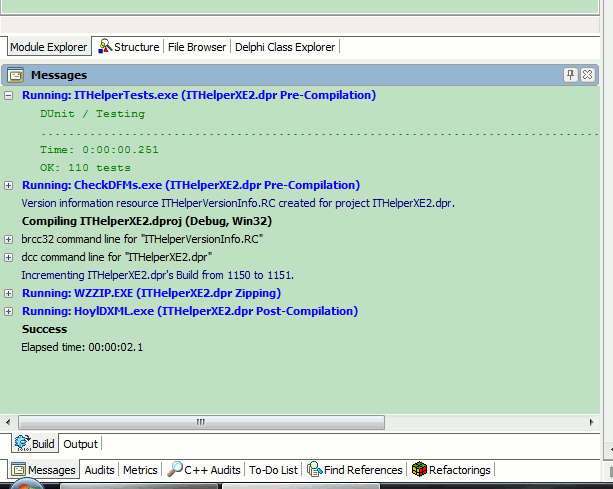

Welcome to the on-line help for the Integrated Testing Helper (ITHelper).
This is a Open Tools API plugin for Delphi and RAD Studio that allows you to run command-line application before and after the compilation of you projects. It also provides the ability to zip you projects files into an archive on each compile/build and manage the application's version information.
The supported IDEs are as follows:
*I do not have an installation or compiler for this version so can only assume there are no problems based on functional version higher and low than this version.
The tool detected error codes being returned from the command-line programs and will stop with a failure messages IF the ERRORLEVEL is greater than 0 (zero).
Output from the command-line applications is captured and placed in the Build Message window along with all the compiler messages. Green messages are successful runs and red messages are failures (These colours can be re-configured in the Message Fonts dialogue).
Note: The zipping functionality requires a base directory from which all files are zipped if you are using relative paths. The default WinZip settings use relative paths so you must specify a directory sufficiently towards the root of the drive to avoid WinZip complaining about ".." relative paths when you open the archive.
In this release I've made quite a number of changes both visually and under the bonnet. Below is a non-exhaustive list of the changes:
.ITHELPER INI
file in the same directory as the project. This allows for the ITHElper's
information to be more oprtable. As a consequence, I've introduced 2 new macro
expansions to allow for different drive mappings. Please see the help for
Project Options for more details;The help for the Integrated Testing Helper is broken down into the following sections: